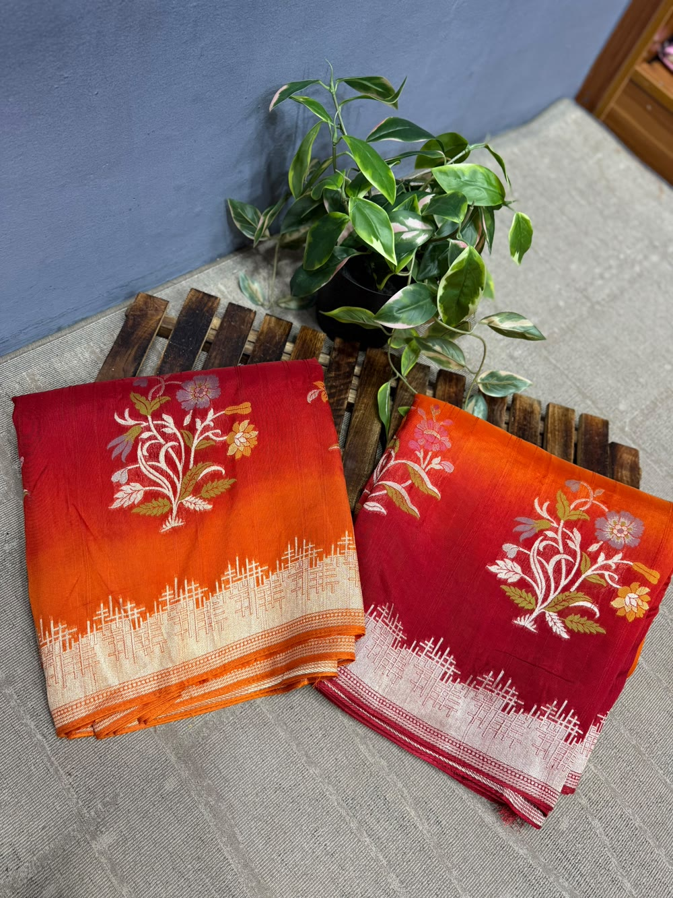

THE BEAUTY IS IN THE DETAIL
A closer look.
A lasting impression.
Allover Meenakari weaving on Munga Tussar. Floral borders on Banarasi viscose crepe. Delicate zari borders on Mysore crepe silk.
Explore the distinctive fabrics and details in the VIBHA catalogue, one drape at a time.
Find your favourite ↗